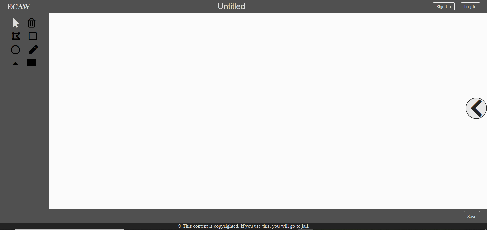

ECAW User Guide
Authors
Ganeanu TudorNecula Alexandru
Demo
Install
Requirements:
- Node
- nodemon
- mysql server
Pocess:
- run npm install
- create mysql database
-
create config.json file in the root folder with the following content
{
"database": {
"host": "",
"user": "",
"password": "",
"database": "",
"port": 3306
}
}
- go with console to /models/migrations_seed
- run
node migrations createto create database structure - run
node seed - refresh is possible with
node migrations refresh - go to root folder and run
npm run start - open localhost:3000 in browser
- you should see this

Using the app
Following scenaries are possible:
Sign up/Log In/Log Out
Use the toolbox to the right to select a tool.
Use the tool by clicking on the workspace.
Use the arrow from the right of the screen to open media content box.
Select a category.
Click on an image/gif/video to add it to the workspace. Gifs are not playing (browser limitation).
Save the project and view saved projects with the Projects button in top right of the screen. You need to be logged in. Share on facebook is also possible.
Download the project as png. Currently images in projects are not supported to download in png.